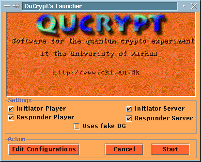
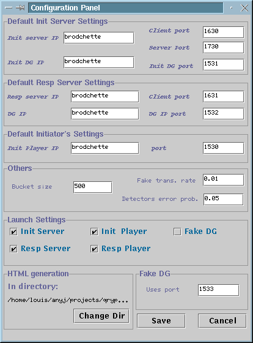

QuCrypt's Configuration
Once QuCrypt has been launched for the first time,
a configuration file can be created. Next time QuCrypt will be launched
it is going to be configured appropriately. The configuration file will
be stored in the default directory under the name qrypto.conf.
One should not edit the configuration file manually. The configuration
file should be updated by using the edit configuration tool.
After launching QuCrypt the following window should
appear:

Settings
The settings allow to select which entities will be launched.
Since QuCrypt works with independant threads, the user can select
which one of the threads should run on the same machine. The initiator
player and the initiator server are the
two entities representing Alice whereas the responder
player and the responder server are the
entities representing Bob. The entities should be checked in the
following cases:
-
Everything running on the same machine: The initiator
player, initiator server, responder player, and responder server
should be checked. This is the (default) situation shown.
-
Initiator only with simulated quantum channel: The
initiator player and the initiator server should be checked. The remote
party should checked the responder player and the responder server.
-
Responder only with simulated channel: The opposite
of the previous setting. This means the responder player and the responder
server are checked.
-
Initiator using a remote quantum channel: Only the
initiator player should be checked. The machine running the initiator part
of the quantum channel should run the initiator server.
-
Responder using a remote quantum channel: The same
as the previous setting except that the responder player must be checked.
-
Running Alice on the machine connected to a real quantum
channel: The initiator player and the initiator server should be checked.
-
Running Bob on the machine connected to a real quantum
channel: The responder player and the responder server should be checked.
The checkbox Uses Fake DG is selected when one wants
the quantum data grabber to be simulated.
The result is the launching of the quantum data grabber as a transparent
background process that allows to use real quantum channel without specialized
hardware. This is the simulated mode the closest to the real experiment.
The simulation includes lost in the fiber and all communication require
between the grabbers and the servers. The communication rate achieved is
comparable to the rate of our experiment.
Edit Configurations
The edit configuration button allows to generate a configuration
file that will inidicate the default settings used each time QuCrypt
is launched. The values that can be set are the ones appearing for
each entity and the status of the checkedboxes in the QuCrypt's
launcher window. After the configuration file has been created QuCrypt
must be launched again. The configuration window looks as follow:

This window allows to set default values for almost each
values needed to launch each entity. More precisely, the following values
can be re-defined:
-
Default Initiator Server Settings: This allows to set the
default values for the initiator server.
-
Default Responder Server Settings: This allows to set the
default values for the responder server.
-
Default Initiator Player Settings: This allows to set the
default values for the initiator player.
The defautl values for the responder player
are included in the previous settings.
-
Others: Allows to set the bucket size which
is the number of qubits transmitted over the real quantum channel before
sending back the outcome to the servers. Larger values increase the speed
since the transmission is less often interrupted. However the larger the
bucket size gets, the less real-time responding are the players.
The Fake trans. rate is the simulated visibility of the fake
data grabber. The value 0.01 means that 1% of all qubits sent make it to
Bob. The Detectors error prob. is the error probability of the simulated
detectors.
-
HTML generation: This allows to select the directory
that contains the initiator and responder templates for HTML generation.
The default one is <qrypto_directory>/templates.
-
Fake DG: This is the port number where the server
connected to the fake data grabber.
-
Launch Settings: Allows to define the default settings
for the checkedboxes of the QuCrypt's Launcher window.